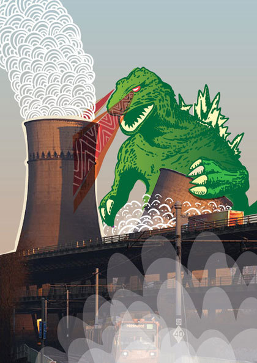
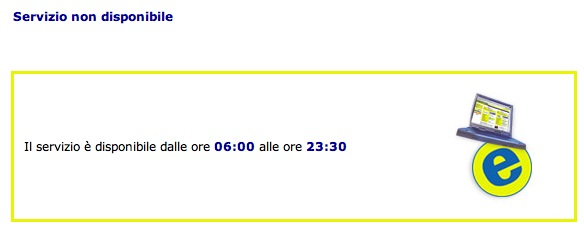

Dec
19
2007

asbesto
MA AVRA’ ROTTO I COGLIONI, STO CAZZO DI CANOTTO DI MERDA, FATTO CON IL FLASH DI MERDA, CHE MI SPARA LA CPU AL 100% SENZA FARE UN CAZZO DI MERDA???
AMMINISTRATORI DI EBAY CHE LEGGETE QUESTO SITO, ED IO SO CHE CI SIETE, PRENDETE ATTO CHE
CI AVETE ROTTO I COGLIONI CON QUESTE CAGATE ALL’ITALIANA (perche’, se non lo sapete, su ebay.com ste cazzate non ci sono
Dec
18
2007

eagle1
Io:
Salve, richiedo un IP aggiuntivo sul server per fornire servizi WEB dedicati.
Loro:
Salve, sommando gli indirizzi ip tra i due server in suo possesso al momento lei ha superato il numero massimo di indirizzi usabili.
E’ possibile acquistare ulteriori ip dal suo pannello clienti nella sezione shop.
Cordiali Saluti
Io:
Salve, sulla macchina in questione io ho diritto a 4 IP, quando è stata installata ne era configurato solo uno.
Attendo di sapere quali sono gli altri 3, con MOLTA URGENZA.
Loro:
Salve, gli altri due indirizzi ip li ha chiedi di essere aggiunti nell’ altro ticket… il 4° ip non può essere assegnato in quanto l’ altra macchina ha sua disposizione ne sta usando 5, quando anchequella ne aveva diritto a 4 :-)
Cordiali Saluti
Io:
Non avete capito NULLA. Sulla macchina in questione xxx.xxx.xxx.xxx e’ presente UN SOLO INDIRIZZO IP. Da contratto ne ho diritto a QUATTRO. Richiedo che mi venga assegnato quindi uno degli indirizzi IP per i quali sto pagando.
L’altro ticket NON CENTRA NULLA CON QUESTO.
Loro:
Salve, ora ho capito, prima di procedere con l ‘assegnazione le chiedo cortesemente di riscrivere la precedente risposta con un tono educato. Le ricordo che scrivere maiuscolo significa urlare. Le chiedo quindi di riscriverlo usando toni civili e procederò alla riassegnazione.
Cordiali Saluti
Io:

Loro:

Tags: idioti, ticket
Dec
17
2007

sand
Amo immaginare i programmatori come dei bambini innocenti a cui e’ stato dato un cesto di Lego e una botta in testa da piccoli; li immagino candidi, senza peccato, intenti a costruire caserme dei pompieri e villini con alberi e fiori.
E la realta’ non puo’ essere cosi’ distante da cio’ che immagino, se un software commerciale per mac smarrisce la sua configurazione dopo un reboot o un crash. D’altronde e’ cosi’ difficile scrivere del codice, come biasimare i poveri programmatori? Memset, bzero, strncpy, classi, oggetti… troppi concetti, troppa complessita’, non c’e’ da meravigliarsi se poi le 30 entry da me inserite nella configurazione fanno a farsi strafottere. E’ un comportamento lecito, nell’entropia.
E come il cazzo va al culo, cosi’ la mia testa si reclina, e il contatto con l’Altissimo si fa diretto, immediato, e potente dal cuore mio esce un gigante e violento
PORCO DIO
E la mano parte FRENETICA verso la ZILLA, inizia a MENARLA finche’ non divento VERDE, un contatore GAY-GER nel culo, l’empio disegno nucleare del cristo atomo di mmerdio: GODO ZILLA.

Tags: mac, programmatori
Dec
17
2007

daphiel
Non so voi ma comincio un po’ a rompermi il cazzo anno dopo anno del Natale, questa fottuta psicosi di merda di andare a intasare in giro le strade per comprare fottutissimi regali ha sfasciato i miei poveri coglioni martoriati. LA GENTE HA UNA VITA! se io stacco alle 18, non posso arrivare a casa alle 19.30 facendo 6 km perchè tu fottuta signorotta devi comprare 500 regali. Del resto cosa c’è da aspettarsi da un paese che sta peggio dello Zimbabwe, che appena sente odore di sciopero TIR scatena milioni di malati a far benzina, roba che scendeva il DIO CRISTO sotto trip faceva meno danni.
In tutto questo ci si mette il fottuto vigile (e qui mi riaggancio al magnifico post di Dibbellas sulle multe) che se passi col giallo a p.zza Irnerio VAFFANCULO ti multa perchè quelle due succhiacazzi non sono state scopate dai mariti (ammesso che ne abbiano) la notte prima. Ma se io ho impegnato il cazzo di incrocio e ci sta una fila di vittime sacrificali del traffico, ma perchè cazzo mi devi multare?? Anzichè stare li a far salotto agli incroci parlando di nerchie nodose dirigete quel cazzo di traffico con le vostre manine da seghe.
Tags: male, morte, natale, santa_killer
Dec
16
2007
eagle1
Sorvolando sulla IMMANE quantità di MMMERDA che si merita 3 emme dovrei descrivere ivi sulle pagine di codeste lamentazioni vado solo a ingiuriare pesante una SCIMMIA AMMAESTRATA che il venerdì alle 17.59 perde tempo a CHIEDERMI UNA COSA IDIOTA.
SalveAbbiamo trasferito il dominio xxx sui nostri server.X Y mi ha riferito che come web mail utilizzava un suo servizio.Dobbiamo configurare qualche record per mantenere la vecchia situazione?Cordiali saluti
SCUSA MA, SE ORA TUTTO FUNZIONA, E TU SAI CHE L’MX CE L’HO IO, TI FA FATICA FARE UNA QUERY AL DNS E VEDERE CHE STRACAZZO DI MINCHIA SUKATA DI CAMPI MX CI SONO? Cioè ora che il dominio ce l’ha qualche altro cerebroleso DI CUI IO IGNORO L’ESISTENZA, non è che PRENDO, e SPOSTO TUTTI GLI MX DEL MONDO così per FARE UN DISPETTO A TE. Il dominio così comè FUNZIONA? OK, METTI GLI STESSI DATI.No, ho dovuto spiegarglielo per telefono, altrimenti mi mandavano a-fare-in-culo la posta di un cliente per tutto il weekend.
Dec
16
2007

ciambellano
succede che c’e’ questo share samba al quale voglio accedere da TEH LINXU
succede pure che KDE coi suoi schiavi nanetti deformi mi ci faccia entrare tranquillamente da utente, come e’ ARIANAMENTE corretto che sia, l’unica pecca e’ che non monta lo share davvero come fa invece con usbdisk & co. impedendomi di usufruire di script tipo sh spruzza directory qui li e_la come vorrei.
succede quindi che mi metto a capire la sintassi di smbmount per montarlo davvero sto cazzo nel cuore di share
[venceslao@varg ~]$ smbmount //eddie/home /mnt/cazzo_nel_cuore/ -o username=venceslao,password=vhd
smbmnt must be installed suid root for direct user mounts (1000,1000)
smbmnt failed: 1
[root@varg ~]# chmod u+s /usr/bin/smbmount
[venceslao@varg ~]$ smbmount //eddie/home /mnt/cazzo_nel_cuore/ -o username=venceslao,password=vhd
libsmb based programs must *NOT* be setuid root.
7749: Connection to eddie failed
SMB connection failed
[venceslao@varg ~]$
urlo bestemmio picchio i bambini cago su un cd di musica brasiliana inculo tutte le ballerine nel sambodromo di rio gridando forte porco.
Tags: morte, odio
Dec
15
2007
sand
Per una volta che decido di pia’ na cosa su ebay, lo faccio in ritardo di 10 minuti, cristo fontana di dolore in Piazza Melo:

DIO PORCO.
Tags: ebay, poste
Dec
14
2007

tripz
La PSP, al contrario di quanto credevo, e’ una grandissima figata… e soprattutto MESTRUOSISSIMA figata e’ Silent Hill ORIGINS.
Ma mamma, MADONNA CROCEFISSA AD UN PENTACOLO IN KOONTZ STREET, potresti evitare di girare per casa di notte silenziosamente, AL BUIO, MENTRE IO GIOCO A QUEL CAZZO DI SILENT HILL, uscendotene con versi striduli appena incroci il gatto cosi’… tanto perche’ e’ bello, roscio e morbidone allora IIIIIIIIIIIIIIIIIIIIIIIIIIII UUUUUUUUUUUUUUUUUUUUUUUUUUU AAAAAAAAAAAAAAAAAAAAAAAAAAAAAAA MIIIIIIIIIIIIIIIIICIOOOOOOOOOOOOOOOOOOOO….
PORCA MAMMADONNA MA’, IO ME STO’ A CACA’ SOTTO MANNACCIACRISTOZZOMBIE!